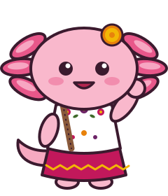
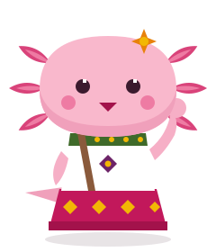
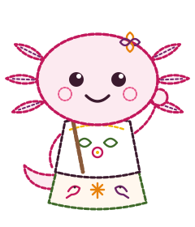

Elige a tu ajolote
Tres propuestas
Las tres llevan blusa bordada, mochila y flor de cempasúchil, y están saludando. Cada una se muestra sobre el fondo crema de la página y sobre el verde del encabezado. La que elijas define el estilo de todas las demás ilustraciones (nopales, flores, papel picado e íconos).

A · Tierno con contorno
Redondo, con contorno grueso color ciruela. Es el más parecido al de tu diseño, se lee bien en tamaño pequeño y tiene un aire de caricatura amigable.

B · Plano geométrico
Sin contorno, con figuras simples y sombras planas. Se ve más moderno y limpio, y los íconos combinarían muy bien con él.

C · Bordado
Dibujado como si fuera hilo, con puntadas de colores y motivos inspirados en el bordado tenango otomí (pajaritos y flores). Es el más ligado a los pueblos, pero el más delicado de ver en tamaño pequeño.